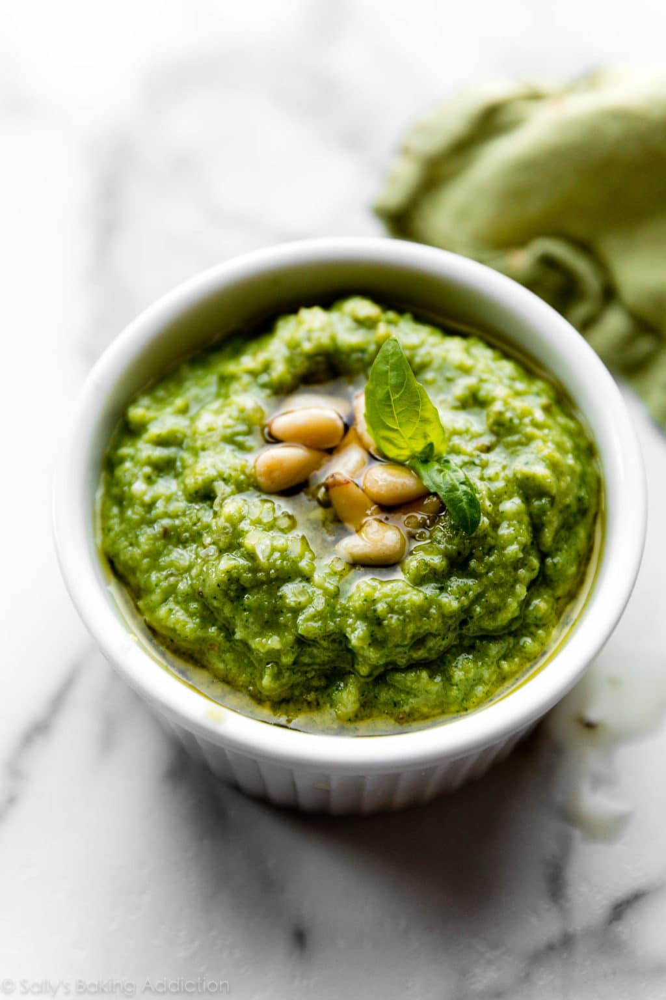

Classic Basil Pesto

Ingredients
- 50 grams fresh basil
- 5 tablespoons freshly grated Parmesan Cheese
- 2 tablespoons Pecorino Cheese
- ⅓ cup olive oil
- 1 tablespoon pine nuts
- 2 cloves garlic chopped
- pinch salt
Steps
- Place the food processor container and blade in the refrigerator for at least one hour.
- Meanwhile wash and dry fresh basil leaves.
- Remove the container and blade from the refrigerator. Add ⅓ basil leaves, half the salt, ⅓ of the olive oil and pulse to combine. Add another ⅓ of the basil leaves and pulse to combine add the remaining basil leaves and pulse.
- Add the pine nuts, Parmesan Cheese and Pecorino, another ⅓ olive oil, remaining salt and pulse to combine, add remaining olive oil and garlic, pulse on high to combine. Serve over cooked pasta.